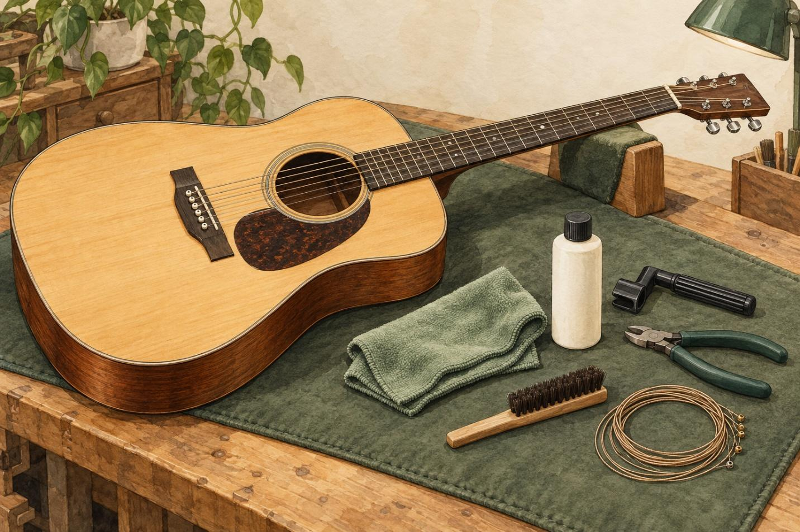
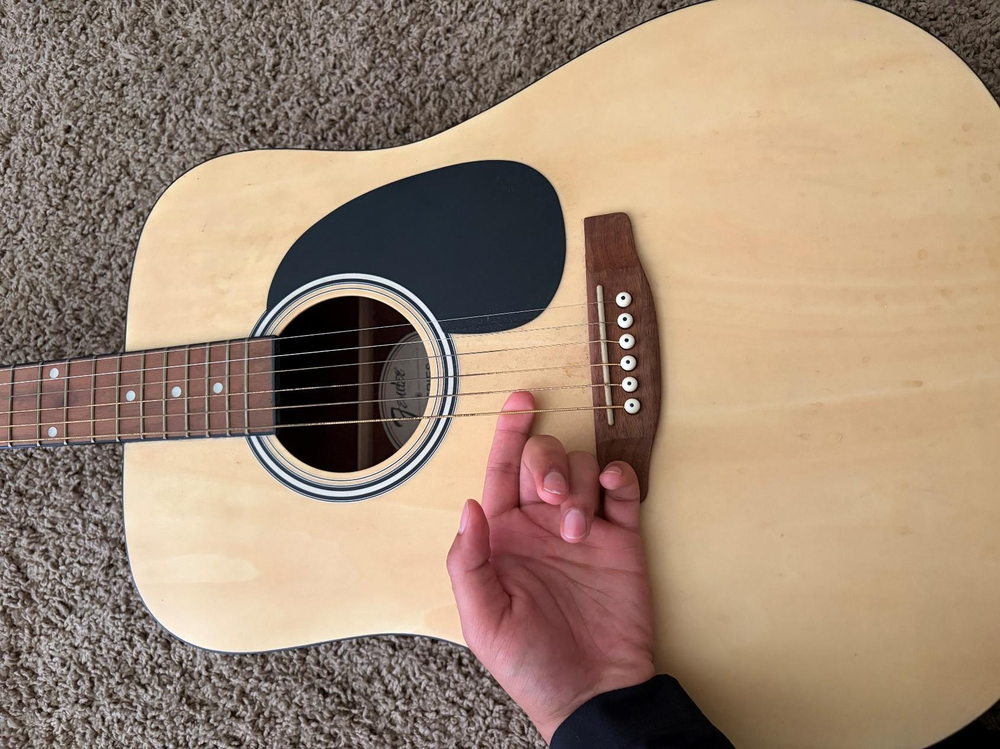
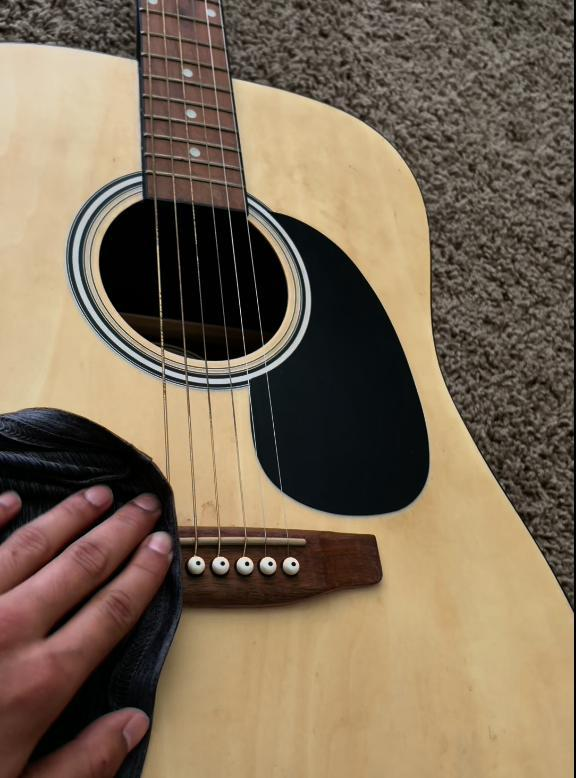

How to Change the Strings of an Acoustic Guitar
A step-by-step guide for beginners

Changing guitar strings is an important part of maintaining an acoustic guitar. Over time, strings collect dirt, lose their brightness, become harder to keep in tune, and may eventually break. Old strings can affect the sound of the guitar and make playing less enjoyable. Learning how to replace strings is a useful skill for any guitarist because it helps maintain sound quality and reduces the need to take the instrument to a repair shop for basic maintenance.
This guide explains how to change the strings on a standard steel-string acoustic guitar. It is intended for beginners who have little or no experience replacing guitar strings. The process includes preparing the guitar, removing the old strings, installing new strings, tuning the instrument, and checking the final setup. Following these instructions carefully can help prevent damage to the guitar and make future string changes easier.
Tools You’ll Need
Before starting, gather all the necessary tools and materials. Having everything ready will make the process more organized and reduce the chance of making mistakes.
- A new set of strings designed for a steel-string acoustic guitar
- A string winder to loosen and tighten tuning pegs more quickly
- Wire cutters or string cutters
- A clean, soft cloth
- A guitar tuner, either a clip-on tuner or a tuning application
- A stable table or work surface
- A soft towel or guitar support to protect the guitar’s finish
Step 1: Prepare the Guitar
Put the guitar on a flat surface. Place a clean towel under the neck or body, if necessary, to avoid scratching the finish. Ensure that the guitar does not slide or fall while working. After washing and drying your hands, handle the strings and instrument. This helps minimize the transfer of dirt and oils onto the fretboard and guitar body.
Inspect the guitar for visible cracks, missing bridge pins, broken tuning pegs, or other issues. If the bridge is moving up or the guitar shows any signs of structural damage, stop and have it checked by a qualified guitar repair technician.

Step 2: Loosen the Old Strings
Loosen the strings with a string winder or by hand, turning each tuning peg until the strings are slack and no longer at their usual pitch. Never cut a string while it is tight. A tight string can snap back and injure you or damage the guitar’s finish.
Untune each string completely before taking it off. You can loosen all six strings before removing them, but do not use too much force on the tuning pegs. If a peg is stuck or takes much more effort than normal to turn, stop and do not force it.
Step 3: Remove the Old Strings
Unwind the strings from the tuning posts. Use a bridge-pin puller to carefully remove the bridge pins and take out the old strings. Keep the pins together so they are not lost. Old strings may have sharp ends, so roll them up carefully for disposal and keep them away from children and pets.
Step 4: Clean the Guitar
Clean dust and dirt from the fretboard, frets, and bridge with a soft cloth. Do not use household cleaners or too much water. Take this opportunity to visually examine the guitar for signs of damage.

Step 5: Install the New Strings
Identify the six strings in standard tuning: E, A, D, G, B, and E, from thickest to thinnest. Insert the ball end of each string into the appropriate bridge hole. Install the bridge pin, then slowly pull the string up so the ball end is secured under the bridge plate.
Step 6: Place the Strings on the Tuning Pegs
Feed each string into its tuning post, leaving enough slack for a few wraps around the post. Turn the tuning peg slowly and make sure the string wraps neatly. Where the post design allows, the wraps should sit below the string’s entry point and should not overlap unnecessarily. Keep light tension on the string as you wind so it does not tangle or slip out of position.
Step 7: Tune the Guitar
Using a clip-on tuner or tuning app, tune each string slowly and carefully to E, A, D, G, B, and E. New strings can stretch, so retune after lightly stretching each string.
After the first tuning, gently stretch each string by lifting it slightly away from the fretboard along a section of its length. Use controlled pressure rather than pulling sharply. Retune the string afterward and repeat if necessary.
Continue checking all six strings until the tuner shows that they are close to the correct pitches. If a string feels unusually tight before reaching its target note, stop and verify that it is the correct string and is installed properly.
Step 8: Trim and Test
Using wire cutters, trim the excess string length, leaving a short overhang at each tuning post. Make sure that all the bridge pins are in place and the strings are secure. Test for buzzing or unusual sounds by playing a few chords.

Common Problems
If the guitar does not hold its tuning, the strings may need more stretching, or a string may be slipping around a tuning post. Inspect the wraps and tune as necessary.
If a bridge pin keeps lifting, check that the string’s ball end is seated under the bridge plate. Release the string and reseat it rather than trying to force the pin into place.
If a string plays at the wrong pitch, check that it is in the correct position and that the tuner is reading the intended pitch. If a string snaps again, make sure it is the correct gauge and inspect the bridge, nut, and tuning post for sharp edges or damage.
Listen for buzzing after changing strings to ensure each string is seated properly at the nut and bridge. If the issue persists, have a guitar technician check the instrument.
Conclusion
Changing strings is a useful acoustic-guitar skill that gets easier with practice. Beginners can do it more confidently by taking time to prepare the guitar, carefully remove the old strings, clean the instrument, install new strings, and tune carefully.
Regular string changes keep the guitar sounding and playing well. Basic maintenance also helps players understand how their instrument works and recognize when a problem is a job for a professional. Take care with each step so string changes are safer, more consistent, and less frustrating.
Works Cited
OpenAI. Acoustic Guitar Maintenance. AI-generated image, 30 Oct. 2026. ChatGPT.
OpenAI. Change Guitar Strings. AI-generated image, 06 Nov. 2026. ChatGPT.